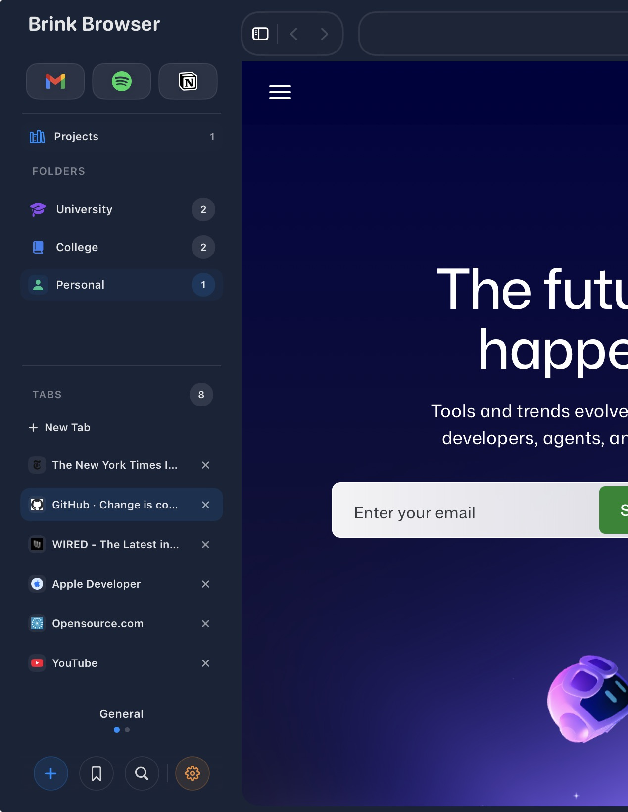

Research Projects
Separate workspaces for every project
Create dedicated research projects for different assignments, modules, papers or topics. Each project keeps its own folders and saved research separate, so the material for one piece of work never has to get mixed into another.
Switch between projects directly from the sidebar, while General stays available as your default workspace for everything else.
- Independent research workspaces
- Project-specific folders and saved research
- Quick project switching from the sidebar
- General workspace always available
- Projects persist across app launches
